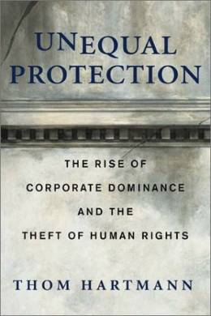

A call to reclaim democracy
If you wonder why and when giant corporations got the power to reign supreme over us, here's the story. A look at Thom Hartmann's important new book, Unequal Protection
- - - - - - - - - -
by William Hare
HEN MANY OF US TACKLE THE SUBJECT of Corporations as law students we were left with a feeling of helpless bewilderment as well as a rancid taste over corporate status as a fictitious person. This legal fiction was compounded into soaring advantages for corporate status, which rankled those of us concerned about fairness in the overall legal picture.
Thom Hartmann's groundbreaking work "Unequal Protection" explains how corporations came to achieve their current hugely advantageous status in a society where President George W. Bush is referred to as "America's CEO." Hartmann begins his study with the American Revolution and its roots as a tax revolt against the inequality rendered against the native population by England. Much of this injustice was manifested by the international British monopoly, the East India Company, which destroyed indigenous competition within America in the important tea-making industry. Usurious tax rates were levied on American companies, while the East India Company prevailed. Two forces emerged in the American economic picture after freedom was achieved, that of the pro-competition, corporate-limiting element led by Thomas Jefferson and the Federalist, corporate protectionists spearheaded by John Adams.
fas-cism (fâsh'iz'em) n. A system of government that exercises a dictatorship of the extreme right, typically through the merging of state and business leadership, together with belligerent nationalism.
-- The American Heritage Dictionary
|
While the corporate side was thwarted by the popular grassroots movement of Andrew Jackson, who ended the monopolistic United States Bank, the monopolists struck back in the era of the Robber Barons of the nineteenth century. A little known decision with strong future implications was handed down in the landmark 1886 U.S. Supreme Court case of Santa Clara County vs. Union Pacific Railroad. While never a part of the court's holding, the concept of the corporation as a person was insidiously worked into the headnotes of the opinion. From that point corporate lawyers seeking advantage treated the concept as revered doctrine.
The fundamental irony arising from the Santa Clara County case was that the Fourteenth Amendment of equal protection, presented to provide former slaves with freedom under the Constitution, was perversely twisted to provide corporate America with advantages over the common citizenry. Time and again courts would rule against the interests of taxpayers while providing corporations with huge advantages. We are currently seeing the results of such inequities as the gap being the richest and poorest elements of society widens, with the middle class squeezed in between.
Hartmann calls for effective grass roots action, encouraging citizens to begin at the local level to evoke a needed change in corporate status. Ordinance changes will hopefully initiate a ripple effect whereby a constitutional amendment will be adopted thereby ending the destructive controversy once and for all and eliminating the advantages achieved by corporations masquerading as persons. The due process clause of the Fourteenth Amendment was written and intended for the protection of citizens, not expansive corporations wielding gigantic economic claws.
Buy the book
|